A complete guide to acquiring Japanese the natural way, through reading, listening, and living in the language.
Follow the sections in order. Each one builds on the last.
Extra reference material that doesn't fit neatly into the flow above.
Every tool, app, and site, organised by category.
Everything in one place: what immersion actually is, the goal you're building toward, how to get your tools set up, and how to use them.
Rather than memorising rules from a textbook, you absorb patterns the same way you absorbed your first language as a child. This is based on the Input Hypothesis: the best way to acquire a language is through comprehensible input, content you can understand, even if you miss the details.
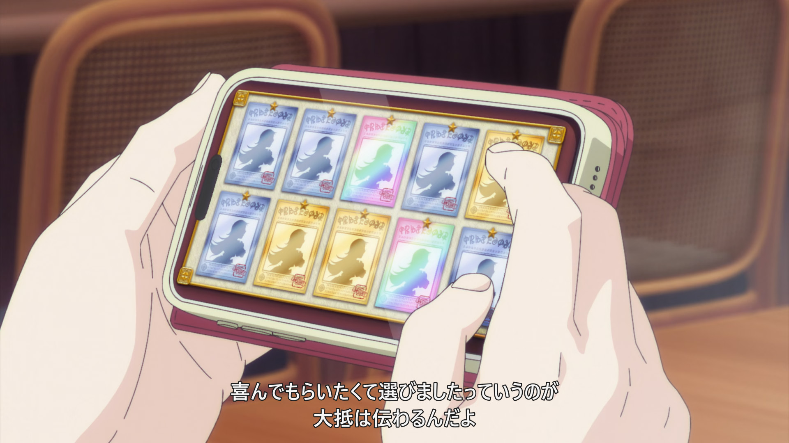
Textbooks teach you concepts, but they can't show you all the ways language is actually used. Japanese isn't a 1:1 translation of English. Many words and grammar points have nuances that simply don't exist in English.
The particles は and が are a classic example. People struggle with them for years studying from textbooks, because the difference only clicks through seeing them used in real sentences across many contexts. Immersion is how that happens. Here is a detailed explanation of は vs が.
Understanding Japanese without translating it in your head first.
In your native language, you don't consciously decode each word when someone speaks to you. You don't translate in your head. You just understand. That's automaticity, and it's what immersion is building toward.
Early on, you'll be translating everything and looking things up constantly. That's fine and expected. Over time, sentences start clicking before you finish reading them. Eventually whole scenes flow without effort. The goal is to reach that point in Japanese.
For the purpose of this guide, we will be using anime. Here are a few tools that turn anime into an immersion environment. Follow the video below, then use the written steps alongside it.
Yomitan setup guide
Install + add dictionaries
ASBPlayer: Chrome
Chrome Web Store
ASBPlayer: Firefox
GitHub download
Jimaku.cc
Subtitle files for anime
Miruro
Streaming site
Anizone
Streaming site
.srt or .ass format works.Think of each sentence as a small puzzle. Your job is to fit the pieces together, look things up when needed, use context when you can, and move on. Below is an example process for beginners to follow.
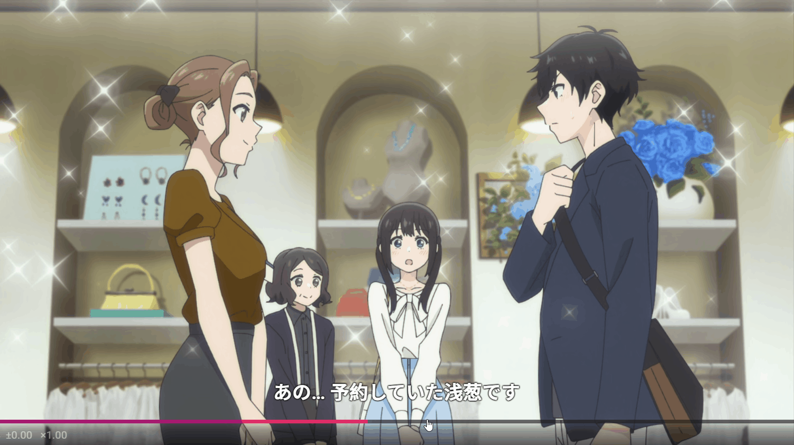
There's no single right answer. Adjust based on what you're watching:
Anything you enjoy. A good starting point is a show you've already watched in English. You already know the plot, so you can focus on the Japanese without getting lost.
Jiten.moe
Anime by difficulty level
JPDB.io
Vocab difficulty rankings
LearnNatively
Media by JLPT ranking
Passive immersion means having Japanese audio on while your attention is elsewhere, on a walk, doing dishes, cooking. Less attention means fewer gains, but during genuinely low-focus tasks it's still useful background exposure. Don't let it replace active sessions.
Reading, listening, and speaking: how to actively improve each one once you're immersing.
Reading is one of the most powerful ways to grow your Japanese. Manga, novels, and visual novels each offer a different experience, so pick whatever keeps you coming back.
Manga is one of the best complements to anime. It builds reading speed, exposes you to more kanji in context, and the visual storytelling makes it easy to follow even at lower levels. The same 0–2 unknown rule applies: look up what you can, skip what's overwhelming, and keep moving.
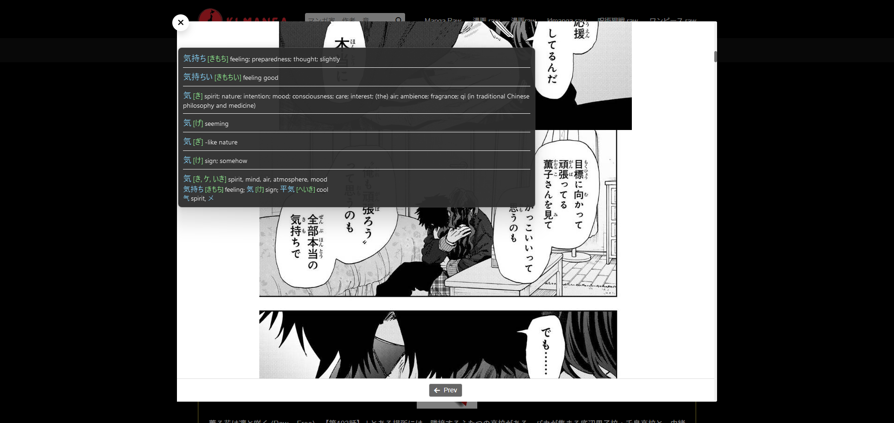
To get Yomitan working on manga you need OCR, since the text is part of the image. Manatan is the easiest all-in-one option: it handles OCR automatically and works on desktop, iOS, and Android. Mokuro pre-processes manga into hoverable HTML pages for desktop use.
Prose is harder than manga: no pictures to fill in the gaps, denser vocabulary, and more complex grammar. That said, web novels on Syosetu and Kakuyomu are written for casual reading and tend to be more accessible than retail books.
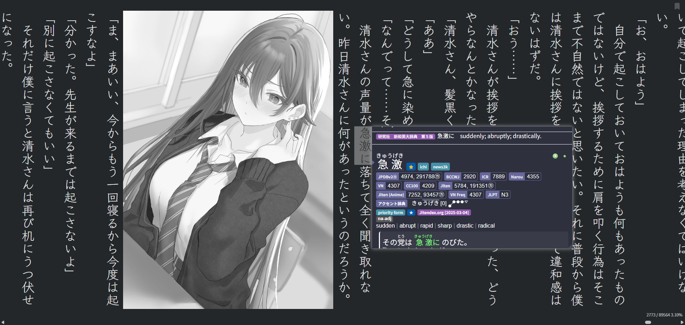
For ebooks, the ッツ Reader renders Japanese text vertically in-browser and is compatible with Yomitan. On mobile, Hoshi Reader (iOS) has first-class support for vertical text and dictionary lookups.
ッツ Ebook Reader
EPUB reader with Yomitan support
Syosetu
Japanese web novels
Kakuyomu
Web novels by Kadokawa
Hoshi Reader (iOS)
EPUB reader with popup dictionary
Anna's Archive
Light novel ebook downloads
TheMoeWay Discord
LN resources, student role required
Visual novels sit somewhere between reading and watching: voiced dialogue means you're training your ears at the same time as your reading, which makes them one of the most efficient immersion formats once you have some foundation.
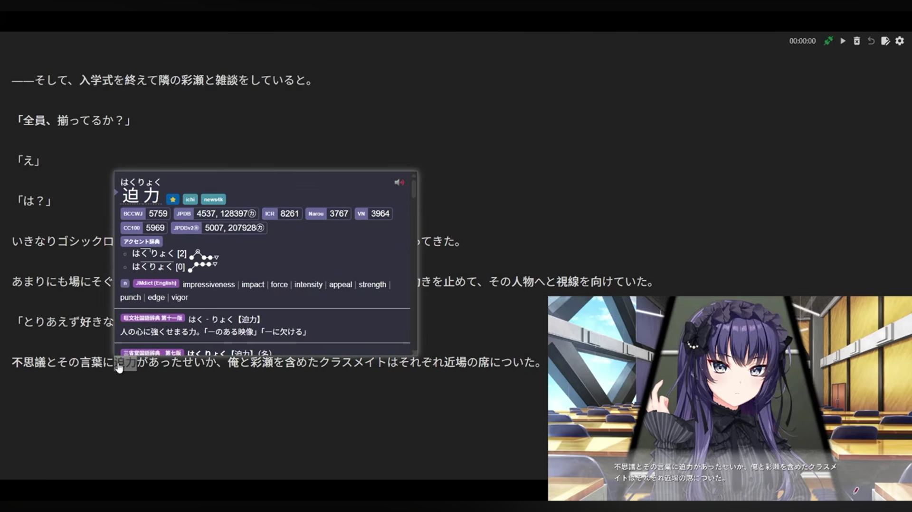
Text hooking with Textractor or JL lets you hover over any line with Yomitan, making lookups just as smooth as with anime subtitles. Ryuugames has a large catalogue of VNs available for download.
Ryuugames
VN downloads, includes adult content ⚠
VN Club
Guides, recommendations, and catalogue
Textractor
Text hooker for VN engines
JL
Popup dictionary, no browser needed
JPDB.io
VN vocab difficulty ratings
TheMoeWay VN Guide
Full setup walkthrough
Games are harder to set up than VNs but extremely good for immersion, particularly RPGs, adventure games, and story-driven titles where you're reading a lot and the gameplay holds your attention.
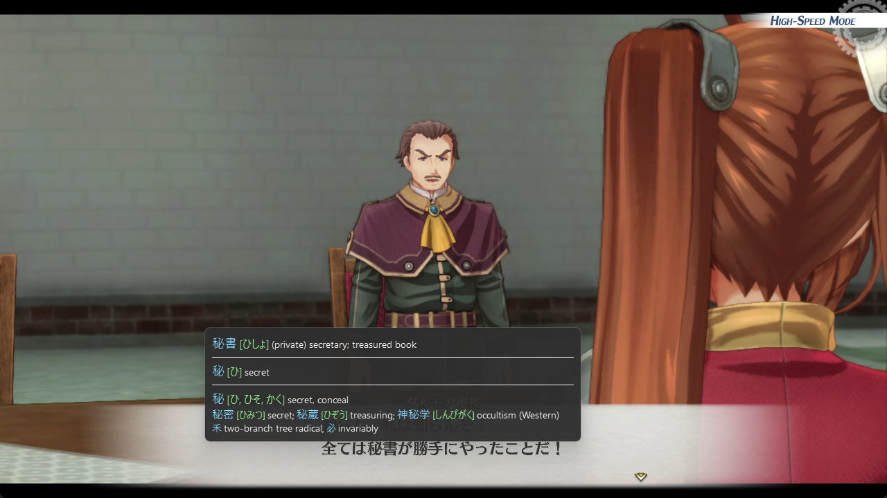
Text extraction varies by engine. Agent covers many emulator and PC game engines with script-based hooking, and GameSentenceMiner makes mining from games straightforward once you have it running.
Agent
Script-based text extractor for games
GameSentenceMiner
Mine cards directly from games
Gaming on Android
Lazy Guide setup walkthrough
Meikipop
Popup dictionary overlay for games
YomiNinja
OCR + Yomitan for any game screen
Game Gengo: Tier List
Top 100+ games for Japanese learners (2025)
Subtitles carry a lot of the load. Once your reading is comfortable, it's time to train your ears directly.
After spending time with Japanese subtitles, your reading comprehension will grow faster than your listening. That's expected: the text does a lot of the work. Intensive listening is how you close that gap.
Anime is professionally recorded and clearly enunciated. Real speech isn't. Once you have a foundation, mix in other content: YouTube vlogs, variety shows, podcasts. People contract words, use slang, and speak over each other in ways anime doesn't prepare you for.
Intensive listening is the most direct way to train your ears. Instead of letting subtitles carry the meaning, you strip them away and force yourself to actually process what you're hearing — the sounds, the rhythm, the pitch. It's effortful by design. A short intensive session moves your comprehension further than hours of passive watching.
Watch without subtitles visible. Only reveal them when you genuinely can't catch something.
Passive immersion means having Japanese audio on while your attention is elsewhere — on a walk, doing dishes, cooking. Less attention means fewer gains, but during genuinely low-focus tasks it's still useful background exposure. Don't let it replace active sessions.
The best material for passive immersion is content you've already watched actively. You've already mapped the words to meaning, so the audio reinforces rather than washes over you. Re-listening to finished episodes, condensed audio, or podcasts you know well gives you far more value than random new content you can't follow.
Output is a skill on top of input; you still need to practice it separately. The more you've immersed, the easier it gets.
If you want to be able to write Japanese by hand, you need to practice it separately. Reading kanji and writing kanji are different skills. The Kanken Deck is the standard tool for this: it covers all jōyō kanji with stroke order, readings, and writing prompts.
Before immersing, you need a foundation. Start with kana first; everything else can be done at the same time once you've got it.
The two phonetic alphabets. Learn these first, since everything else depends on them.
Learn hiragana first, then katakana. Tackle one row at a time. Drill each row on kana.pro until you can read it without hesitating before moving on. Don't move to katakana until hiragana is solid. Most learners finish both in 1–2 weeks.
kana.pro
Drill hiragana and katakana, timed tests by row
Tofugu Hiragana Guide
Mnemonic-based hiragana walkthrough
Tofugu Katakana Guide
Mnemonic-based katakana walkthrough
Kana Intro Video
Video introduction to hiragana and katakana
Read every hiragana and katakana character instantly, without sounding them out. Once you're there, you're ready to move on, and kana will become automatic through exposure.
Pick one guide and read through it. Understanding beats memorising.
Japanese grammar is very different from English. Word order is flexible, verbs go at the end, and particles do a lot of work that prepositions and word order do in English. The goal at this stage isn't to master grammar; it's to understand enough that you can make sense of sentences during immersion.
Pick one guide and work through it from start to finish. Read each section to understand the concept, then move on. Don't drill or memorise; comprehension is what matters. Grammar internalises through immersion, not repetition.
Yokubi recommended
Structured, beginner-friendly, updated regularly
Tae Kim's Guide
Free, comprehensive, widely used
Japanese Ammo with Misa
Video-based grammar series, good for visual learners
Bunpro Grammar List
Browse all grammar points for free, N5 through N1
Dictionary of Japanese Grammar
Comprehensive grammar reference, good for looking things up
The five most important concepts from Yokubi's Absolute Beginner, Part 1: Getting Started.
Finish the guide once. You don't need to retain everything perfectly; you just need enough to start making sense of sentences during immersion. Grammar will fill itself in naturally over time.
A taste of what you'll see across every JLPT level, pulled from Bunpro's grammar list. Tap one to see its meaning and example sentences.
Select a grammar point above to see its meaning and examples.
Build a vocabulary foundation using Anki. Don't study kanji in isolation.
Anki is a spaced repetition flashcard app: it schedules cards so you review them just before you'd forget them, making long-term retention far more efficient than standard study. The Kaishi 1.5k deck is the standard starting deck: 1,500 of the most common Japanese words, each with audio, example sentences, and furigana.
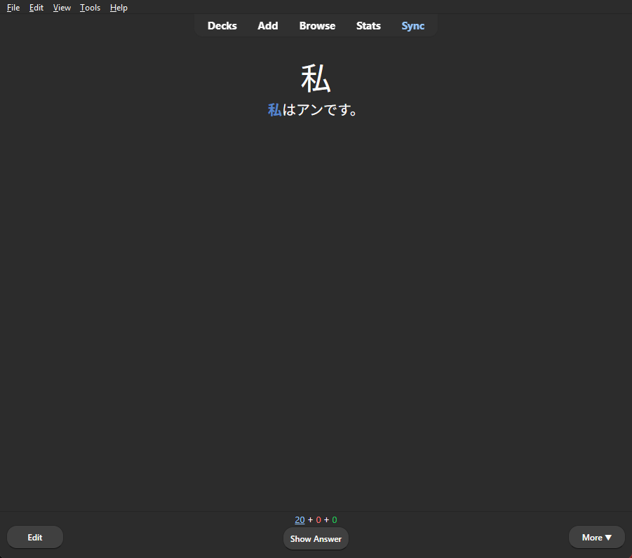
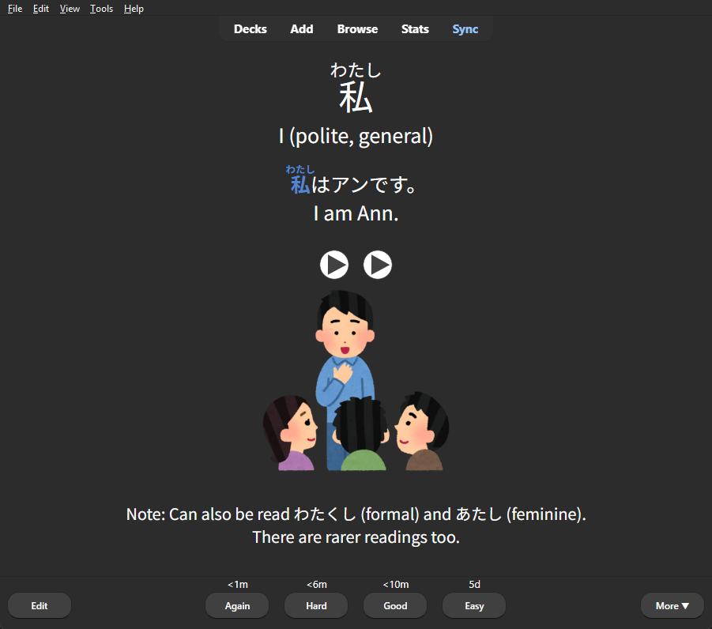
Word, reading, an example sentence, and native audio, all on one card.
The kanji rides along with the word. Recognise 日本, not 日 and 本 in isolation.
Anki
Download the desktop app (free)
Kaishi 1.5k Deck
The standard beginner vocabulary deck
You Don't Have to Study Kanji
Why vocab-first kanji acquisition works
JPDB.io
Word frequency lists, see what's worth learning first
Reach around 1,000 known words before starting immersion. You won't understand everything, but you'll have enough to start making sense of common sentences. Keep doing Anki daily even after you start immersing.
Japanese pitch is about melody, not volume. A little ear training now goes a long way.
In English, you stress syllables: louder, longer, and higher all at once. Japanese doesn't work that way. Every beat of a word is roughly the same length and volume, and the only thing that changes is whether your voice is high or low. That's pitch accent.
It matters because some words sound identical except for pitch. 雨 (あめ, rain) and 飴 (あめ, candy) use the exact same sounds; pitch is the only difference. Native speakers rely on it constantly, even if they couldn't explain the rule.
cute, adorable
Japanese words follow one of a small set of pitch patterns, and once you know a word's pattern, every syllable in it is predictable. You don't need to memorise the theory behind this to get started. What helps most at this stage is simply listening for the rises and falls, the same way you'd notice the tune of a short melody.
When you're ready to go deeper, Japanese pitch breaks down into four named patterns (heiban, atamadaka, nakadaka, and odaka), and Yomitan's dictionary marks each word with a number showing which one it follows. Usagi Chan's primer below explains the full system clearly once you're past the basics.
Pitch Accent Intro Video
What pitch accent is and why it matters
Usagi Chan's Primer
Clear written breakdown of the four patterns
Kuuube's Minimal Pairs
Daily ear training, high vs low pitch
KOTU.io
Pattern recognition trainer with audio
Darius: Pitch Acquisition
How pitch gets absorbed through immersion
How to Listen for Pitch
Training your ear to notice pitch in the wild
How to Practice Pitch Output
Moving from hearing pitch to producing it
Be able to reliably tell high from low pitch in minimal pairs. You're not aiming to produce correct pitch at this stage; that comes through immersion and output practice much later. You're just training your ear to notice pitch at all, so it can do its job passively from here on.
Saving words from your immersion directly into Anki, so you study vocab that's actually useful to you.
Premade decks like Kaishi 1.5k are great for getting started. But once you're immersing, the most useful words depend on what you're watching. Mining bridges the two. Your Anki deck grows in the direction of your own content.
How it works: When you hover over a word with Yomitan, you can save it to Anki with one keypress. ASBPlayer also captures the sentence and an audio clip from the episode automatically, so each card has context built in.
Lapis Note Type
Modular Anki Note Type
Donkuri's Mining Setup
Mining Setup for Various Media
Mining Tutorial
Sentence Mining Video by JouzuJuls
Reading is one of the most powerful ways to grow your Japanese. Manga, novels, and visual novels each offer a different experience, so pick whatever keeps you coming back.
Manga is one of the best complements to anime! It builds reading speed, exposes you to more kanji in context, and the visual storytelling makes it easy to follow even at lower levels. The same 0–2 unknown rule applies: look up what you can, skip what's overwhelming, and keep moving.
To get Yomitan working on manga you need OCR, since the text is part of the image. Manatan is the easiest all-in-one option. It handles OCR automatically and works on desktop, iOS, and Android. Mokuro pre-processes manga into hoverable HTML pages for desktop use.
Manatan
All-in-one manga reader with auto OCR
Mokuro catalog
Pre-processed manga, hoverable on desktop
Jiten.moe
Manga and books ranked by difficulty
KLManga
Online raw manga reading
DL-Raw
Online raw manga reading
Rawkuma
Online raw manga reading
Prose is harder than manga, no pictures to fill in the gaps, denser vocabulary, and more complex grammar. That said, web novels on Syosetu and Kakuyomu are written for casual reading and tend to be more accessible than retail books. For ebooks, the ッツ Reader renders Japanese text vertically in-browser and is compatible with Yomitan. If you're on mobile, Hoshi Reader (iOS) and Hoshi Reader Android both have first-class support for vertical text and dictionary lookups.
ッツ Ebook Reader
EPUB reader with Yomitan support
Syosetu
Japanese web novels
Kakuyomu
Web novels by Kadokawa
Hoshi Reader (iOS)
EPUB reader with popup dictionary
Anna's Archive
Light novel ebook downloads
TheMoeWay Discord
LN resources, student role required
Visual novels sit somewhere between reading and watching: voiced dialogue means you're training your ears at the same time as your reading, which makes them one of the most efficient immersion formats once you have some foundation. Text hooking with Textractor or JL lets you hover over any line with Yomitan, making lookups just as smooth as with anime subtitles. Ryuugames has a large catalogue of VNs available for download, and TheMoeWay has a full setup guide to get everything running.
Ryuugames
VN downloads, includes adult content ⚠
VN Club
Guides, recommendations, and catalogue
Textractor
Text hooker for VN engines
JL
Popup dictionary, no browser needed
JPDB.io
VN vocab difficulty ratings
TheMoeWay VN Guide
Full setup walkthrough
Games are harder to set up than VNs but extremely good for immersion, particularly RPGs, adventure games, and story-driven titles where you're reading a lot and the gameplay holds your attention. Text extraction varies by engine: Agent covers many emulator and PC game engines with script-based hooking, and GameSentenceMiner makes mining from games straightforward once you have it running.
Agent
Script-based text extractor for games
GameSentenceMiner
Mine cards directly from games
Gaming on Android
Lazy Guide setup walkthrough
Meikipop
Popup dictionary overlay for games
YomiNinja
OCR + Yomitan for any game screen
Game Gengo: Tier List
Top 100+ games for Japanese learners (2025)
Subtitles carry a lot of the load. Once your reading is comfortable, it's time to train your ears directly.
After spending time with Japanese subtitles, your reading comprehension will grow faster than your listening. That's expected. The text does a lot of the work. Intensive listening is how you close that gap.
Intensive listening is the most direct way to train your ears. Instead of letting subtitles carry the meaning, you strip them away and force yourself to actually process what you're hearing — the sounds, the rhythm, the pitch. It's effortful by design. A short intensive session beats hours of passive watching when it comes to closing the gap between reading and listening comprehension.
Watch without subtitles visible. Only reveal them when you genuinely can't catch something. This forces you to actually hear the sounds, pitch, and rhythm rather than relying on text.
Anime is professionally recorded and clearly enunciated. Real speech isn't. Once you have a foundation, mix in other content: YouTube vlogs, variety shows, podcasts. People contract words, use slang, and speak over each other in ways anime doesn't prepare you for.
Passive immersion means having Japanese audio playing while your attention is elsewhere — on a walk, doing dishes, cooking. Less attention means fewer gains, so it doesn't replace active sessions. But during genuinely low-focus time, it still adds useful background exposure and keeps your ear accustomed to the rhythm of the language.
The best material for passive immersion is content you've already watched actively. You've already mapped the words to meaning, so the audio reinforces rather than washes over you. Re-listening to finished episodes, condensed audio, or podcasts you know well gives you far more value than random new content you can't follow.
Consistency matters more than volume. A steady hour every day beats a seven-hour session once a week.
Building solid comprehension takes hundreds to thousands of hours. Progress will feel slow, then one day something clicks and it gets noticeably easier. That keeps happening. Just don't stop.
Output is a skill on top of input; you still need to practice it separately. The more you've immersed, the easier it gets.
If you want to be able to write Japanese by hand, you need to practice it separately. Reading kanji and writing kanji are different skills. The Kanken Deck is the standard tool for this: it covers all jōyō kanji with stroke order, readings, and writing prompts, structured by Kanji Kentei level.
A browser extension used by 100,000+ learners. Hover over any Japanese text to instantly see the reading, meaning, and pitch accent, then send it to Anki with one keypress.
Yomitan is a free browser extension that lets you hover over any Japanese text to instantly see readings, definitions, pitch accent, and example sentences. It's available on Chrome, Edge, and Firefox. Once you learn kanji naturally through immersion, Yomitan lets you look up unfamiliar words instantly without breaking the flow.
The best part? You can connect it directly to Anki. Find a word you want to remember, and with one keypress you've saved it as a flashcard: sentence, audio, images and all. This is called sentence mining, and it's how serious learners build their personal vocabulary deck.
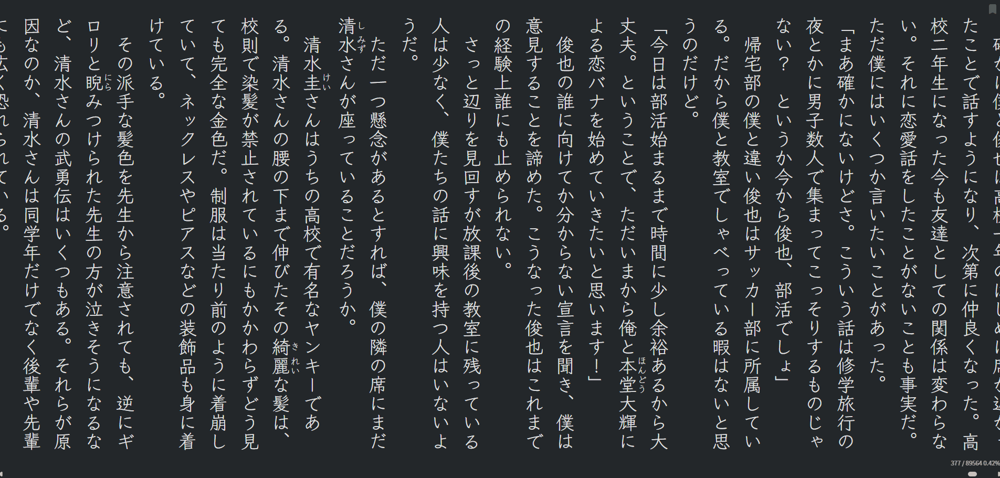
Choose your browser and install Yomitan from the official store. It's free and available on all major browsers.
Yomitan: Chrome / Edge
Install from the Chrome Web Store
Yomitan: Firefox
Install from Firefox Add-ons
Yomitan Wiki
Official documentation and advanced setup guides
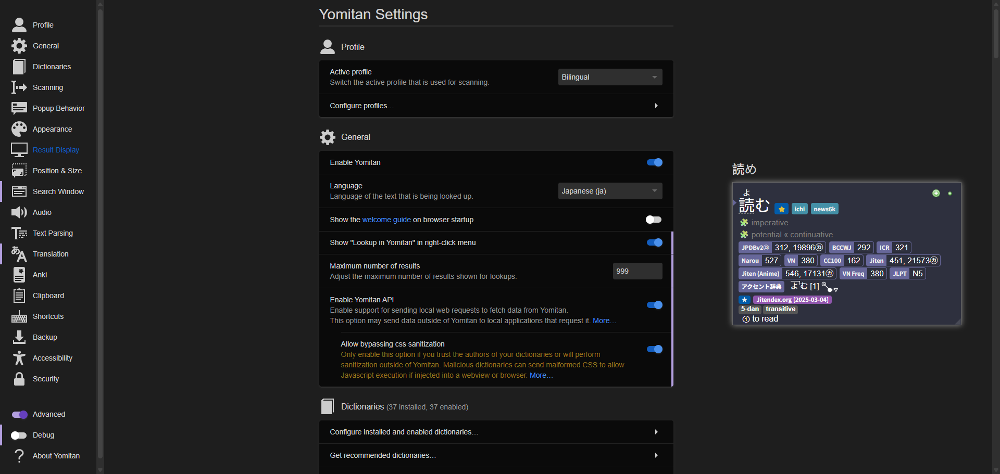
Yomitan does nothing without dictionaries loaded into it. Dictionaries come as .zip files. Do not extract them. Download the ones below and import them directly.
Install these five to start:
.zip files at once. Wait for them to finish importing; it takes a minute.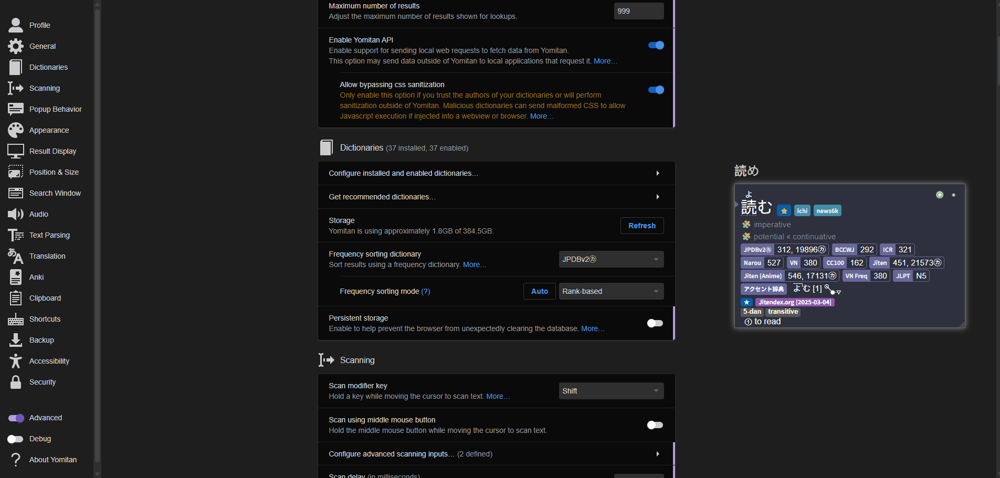
Frequency dictionaries show you how common a word is, useful for knowing whether it's worth mining. Install one or both:
A rough guide to what frequency numbers mean: 1–10k is very common, 10–20k is common, 20–30k is fairly common, 30–50k is getting uncommon, above 50k is rare.
The default audio source in Yomitan (JapanesePod101) sometimes has wrong pitch and many missing words. Local audio uses a curated native speaker database stored on your machine, faster, more accurate, and works offline.
Once you're set up and immersing, you can connect Yomitan to Anki so that looking up a word and saving it to a flashcard is a single keypress. This is sentence mining: it builds your personal vocabulary deck from content you actually encounter.
The Japanese Language Proficiency Test runs N5 (beginner) to N1 (advanced). It's the most widely recognised certification for Japanese, useful for work, visas, and university admissions in Japan.
Doing timed mock tests under real conditions is the most effective way to prepare. The JLPT format is specific. Knowing how questions are structured saves time on the day.
The N2 and N1 reading sections pull heavily from formal written Japanese: essays, editorials, informational texts. Note.com (personal essays and commentary) and NHK Web (news articles) are good sources of level-appropriate native reading material you can mine with Yomitan.
The two dominant prep series approach the exam differently. Most serious learners combine them. Sou Matome for an accessible first pass, Kanzen Master to consolidate weak areas closer to the exam.
Separate books per skill (grammar, vocab, kanji, reading, listening). Mostly in Japanese, demanding, and the go-to for people aiming to pass with a solid score rather than scrape by. Best from N3 upwards. Does not cover N5.
Each level covered in six weeks, one lesson per day, with English explanations. Goes all the way from N5 to N1. Better paced for beginners and good for building familiarity with the format before tackling Kanzen Master.
The Dictionary of Japanese Grammar (DoJG) is a Three-volume grammar reference covering Basic, Intermediate, and Advanced. The Anki deck has 629 grammar points, the front shows example sentences, back reveals the point, English equivalent, and usage.
The Tango Vocabulary Decks are graded vocab decks built around the most common words at each JLPT level. Cards include example sentences and audio. Run alongside your prep books to cover vocabulary systematically without having to mine it yourself.
Grammar is the section most learners underestimate going into the JLPT. These tools cover every level from N5 to N1, with explanations in both English and Japanese.
NihongoKyoshi JLPT Grammar
Every JLPT grammar point explained in Japanese, N5 to N1, free
NihongoKyoshi grammar deck
Anki deck for JLPT grammar, Japanese definitions only
Bunpro grammar list
Grammar reference with SRS reviews, free to browse, $5/mo for full access
Mainichi Nonbiri
All JLPT grammar in Japanese, includes 敬語 and onomatopoeia. N4+
DoJG Lite
Free online Dictionary of Japanese Grammar, essential reference for N3+
JLPT N1 Grammar: 1 Hour Review
日本語の森 video covering N1 grammar points in full. Not for beginners
Full-featured tools that combine grammar, kanji, and vocab in a structured SRS environment, useful if you want a single platform rather than assembling individual resources.
Renshuu
Grammar, kanji, and vocab quizzes with explanations, free with paid tier
MaruMori
All-in-one grammar/kanji/vocab SRS with a guided "adventure" path, N5–N1, paid
Minato
Free Japan Foundation courses across multiple levels and languages
Minato: App Portal
Japanese learning apps from the Japan Foundation
A spaced repetition flashcard app. This page covers what it is, how it works, how to set it up, and how to use it effectively.
Anki is a free flashcard application built around spaced repetition. It schedules reviews at the optimal moment, right before your brain would forget something, so you spend almost no time on things you already know and focus entirely on things you don't. It's available on PC, Android (free), and iOS ($25 one-time purchase). AnkiWeb is a free browser alternative if you're on iOS.
Front of the card, then the back: the answer is revealed once you try to recall it yourself.
Every card has an interval: the number of days until Anki shows it to you again. When you answer a card:
The result: cards you know well drift to weeks or months between reviews. Cards you keep failing come back daily. You never waste time drilling something you already have solid. Forgetting frequently early on is normal and expected. Relearning is part of the process, and each relearn makes the memory stick longer.
Choose your platform and get Anki installed.
Kaishi 1.5k is the recommended starter vocabulary deck. It covers the most common ~1,500 Japanese words with audio, example sentences, and kanji. Download the .apkg file from the link below, then open it. Anki will import it automatically.
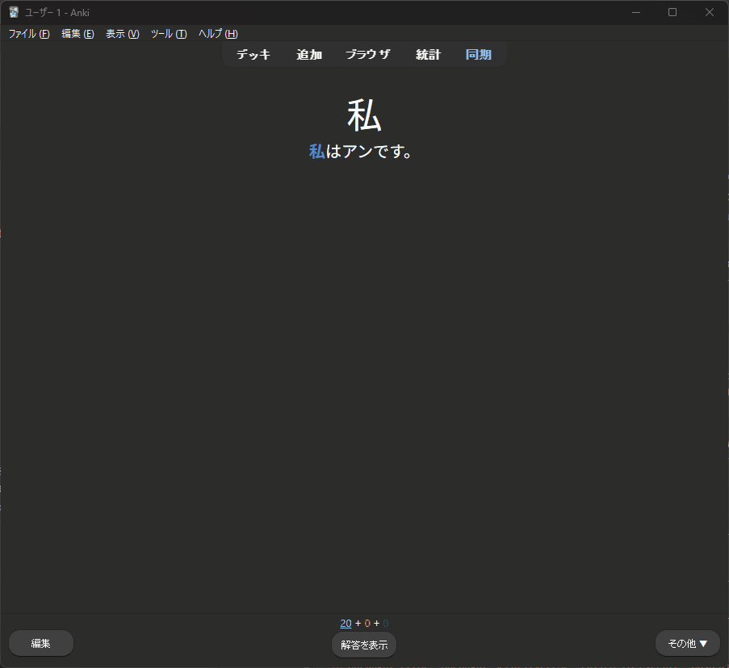
The 1500 most common Japanese words, with images and native audio.
Open the downloaded .apkg file directly. Anki opens and imports it for you.
After importing, hover over the Kaishi deck and click the cog icon → Options. These three screens cover everything that matters, drag the slider or use the arrows to move between them:
1m 5m 10mThe third slide above (Learn ahead limit, Answer hotkeys) lives outside Deck Options, so close that window first. On the top of the screen go to Tools → Preferences → Review to find it.
Go to Tools → Add-ons → Get Add-ons and paste each code below, one at a time. Restart Anki after installing all four.
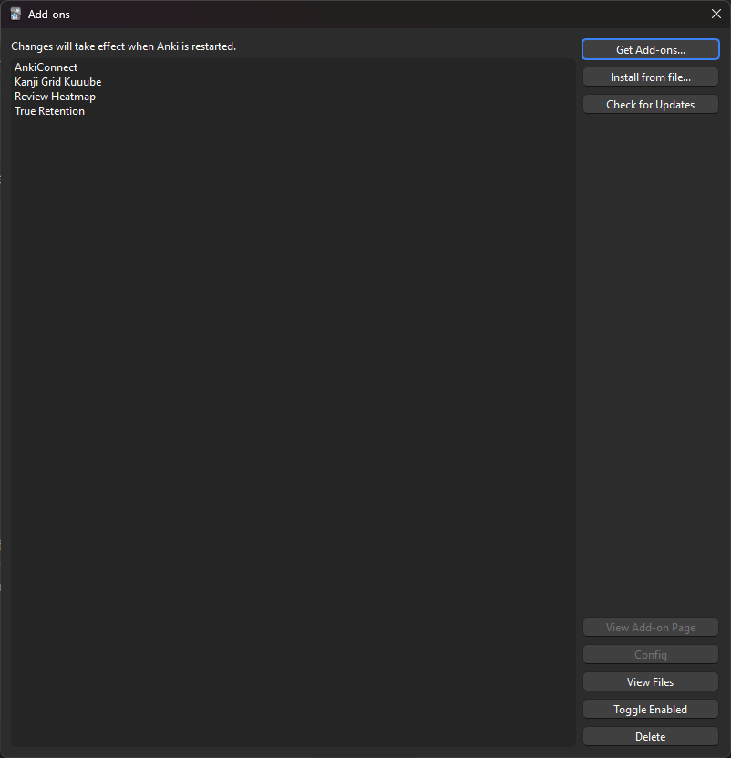
Opens the add-ons manager. Click "Get Add-ons" and paste each code below, one at a time.
Restart Anki after installing all four codes for them to take effect.
After restarting, open deck options again while holding Shift and clicking the cog. This opens the add-on settings tab. Under General:
Click the deck and press Study Now. Each card shows a word on the front. For new cards, press Show Answer immediately without guessing; you haven't seen it yet.
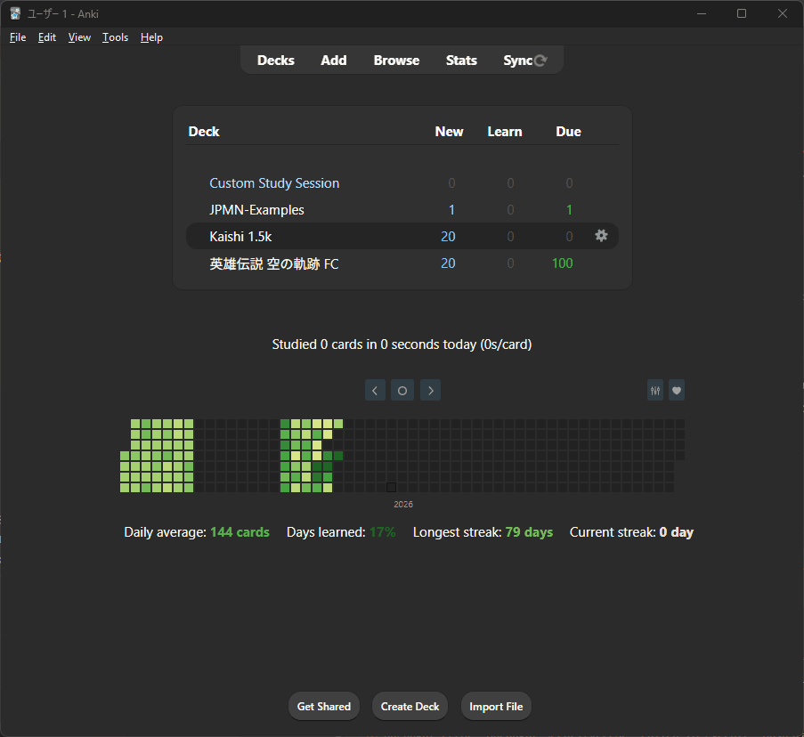
On the back you'll see the reading, meaning, an example sentence, and audio. Listen to the audio and try to match what you hear to the text. You only need to remember two things:
Grade cards only through:
You couldn't recall the answer correctly. The card comes back soon in the same session, and more often in the days that follow.
You recalled the reading and meaning correctly. The card graduates for the day and is shown less frequently going forward.
Use this to decide Pass or Fail:
You don't need to match the dictionary definition word for word. Close enough counts.
Once you finish Kaishi 1.5k (~1,500 words), you have enough of a foundation to start sentence mining: pulling words directly from content you're watching or reading into your own Anki deck. At that point your immersion will start generating more vocabulary than any premade deck can. See the page for how to set that up.
Everything you need, organized by category.
Kuuube Kana Quiz
Drill hiragana and katakana with audio
Kuuube Kana Quiz (Sounds)
Audio-based kana recognition practice
Kana.pro
Fast kana typing drill, row by row
DJT Kana
Kana recognition game with audio
Real Kana
Typing quiz for hiragana and katakana, also on iOS
Tofugu Kana Quiz
Simple romaji input quiz, beginner friendly
Learn All Hiragana in 1 Hour
JapanesePod101 video, write and read
Learn All Katakana in 1 Hour
JapanesePod101 video, write and read
Hiragana writing practice
Printable PDF sheets with stroke order
Katakana writing practice
Printable PDF sheets with stroke order
Free spaced-repetition flashcard app. The standard for vocab, sentence mining, and grammar review.
Anki
Download for Windows, Mac, Linux
Kaishi 1.5k deck
Recommended starter vocab deck, 1,500 core words with audio
Lapis note type
Elegant, simple mining note type, recommended
JP Mining Note alternatives
Overview of different Anki note types for mining
Kanji Grid add-on
Visualize kanji coverage across your decks
True Retention add-on
Shows real retention rate vs Anki's default metric
AnkiConnect add-on
Required for Yomitan → Anki card creation
PassFail add-on
Simplifies review buttons to just Pass and Fail
Review Heatmap add-on
GitHub-style heatmap of your review activity
FSRS setup guide
Configure FSRS scheduler for better retention
Pop-up dictionary for your browser. Hover over any Japanese text to instantly look it up and send cards to Anki.
Yomitan (Chrome)
Install the extension from the Chrome Web Store
Yomitan Wiki
Official setup guide and documentation
Yomitan setup (TMW)
TheMoeWay's detailed Yomitan + Anki setup tutorial
Yomitan setup (Lazy Guide)
Step-by-step PC setup guide for Yomitan
Yomitan → Anki mining guide (Reddit)
Community walkthrough for mining vocab cards with Yomitan
shoui dictionary collection
Curated Yomitan dictionary pack, the most complete collection
Yomitan Dictionaries (MarvNC)
Collection of recommended dictionaries for Yomitan
NihongoKyoshi grammar deck
Anki deck for JLPT grammar, Japanese definitions only
Tools for extracting sentences from anime, manga, visual novels and games into Anki.
Mine from anime (AnimeCards)
MPV setup and sentence mining from anime
asbplayer (Chrome)
Attach JP subtitles to streaming video and mine to Anki
MPV (Windows build)
Video player used for anime mining setup
GameSentenceMiner
Mine sentences from games automatically
Meikipop
OCR-based popup dictionary for manga, games, images
JL
Lookup tool for gaming/reading without a browser
ShareX
Screenshot OCR, turns images of text into copyable text for mining
Migaku
Browser extension, instant flashcards from anything you read/watch. Paid, $10/mo
Textractor
Hook and extract text from visual novels
Agent
Script-based hooker, works with games and emulators
LunaHook
Modern Textractor alternative, part of LunaTranslator
YomiNinja
Screen OCR with Yomitan integration for games
owocr
Screen OCR for reading manga and games
MeikiOCR
OCR tool for Japanese text recognition
Manga-OCR
Manga-optimized OCR, high accuracy on speech bubbles
Jisho
Standard J↔E dictionary, radical search, stroke order, examples
Weblio
Japanese monolingual, 大辞林 and more. N3+
Jiten.moe
Anime vocab difficulty rankings + dictionary
JPDB
Dictionary with media frequency lists and SRS deck sync
DoJG Lite
Free online Dictionary of Japanese Grammar, essential reference
Kanjipedia
Official kanji dictionary, readings, radicals, 四字熟語. N4+
Forvo
Hear any word pronounced by a native speaker
Ichi.moe
Sentence parser, breaks down grammar into components
Jotoba
Multilingual dictionary with autocomplete, kanji radical tree, and inflection display
KOTU.io
Pitch accent recognition trainer
Dogen Japanese Phonetics
Comprehensive pitch accent video series by Dogen
Darius: Notes on pitch acquisition
How to actually acquire pitch accent through immersion
Yudai Sensei
YouTube channel focused on pitch accent training
Usagi Chan Pronunciation Guide
Comprehensive pitch accent primer and how-to
How to Listen for Pitch
Training your ear to notice pitch in the wild
How to Practice Pitch Output
Moving from hearing pitch to producing it
Yokubi recommended
Concise grammar guide, designed to get you reading fast
Tae Kim's Guide
Classic free grammar guide, direct and approachable
Imabi
Thorough, comprehensive grammar for all levels, best for intermediate+
DoJG Lite
Free online Dictionary of Japanese Grammar, essential reference
NihongoKyoshi JLPT Grammar
JLPT grammar points taught in Japanese, N5 to N1
Bunpro grammar list
Free grammar reference with SRS reviews, $5/mo for full access
Mainichi Nonbiri
All JLPT grammar in Japanese, includes 敬語 and onomatopoeia. N4+
Cure Dolly: Organic Japanese
Structural approach to Japanese grammar via video series
Cure Dolly transcript
Full text transcript of the Organic Japanese series
Sakubi
Compact grammar guide, quick read, good for reference
Grammar Guide Nobody Asked For
Crash course in Japanese grammar, note: adult-oriented examples
Japanese Conjugation Practice
Test your conjugation knowledge, requires prior study
JLPT N1 Grammar: 1 Hour Review
日本語の森 video covering N1 grammar points in full. Not for beginners
Renshuu
Grammar, kanji, and vocab quizzes with explanations, free with paid tier
MaruMori
All-in-one grammar/kanji/vocab SRS with a guided "adventure" path, N5-N1, paid
Minato: App Portal
Japanese learning apps from the Japan Foundation
Minato
Free Japan Foundation courses across multiple levels and languages
NHK World: Easy Japanese Lessons
48 short A1-A2 lessons with video skits, free
Japanese Onomatopoeia List
Reference for onomatopoeia/mimetic words by category
Learn kanji through vocabulary, not in isolation. These resources help with recognition, radicals, and writing.
Kanji Alive
Learn kanji radicals and how they form kanji
Kanji Koohii
Community mnemonics for kanji radicals
LingoDeer Radical Chart
Beginner-friendly breakdown of kanji radicals
Kanjipedia
Official kanji dictionary, readings, radicals, 四字熟語. N4+
Ijidokun (異字同訓) PDF
Official list of kanji with same reading but different meanings, in Japanese
Kanji Writing (N5)
103 N5 kanji with meanings, readings, and writing grid
Daily Kanji
One JLPT-graded word per day, streak tracking, native audio, stats page
Loecsen Japanese Phrasebook
Interactive phrasebook with audio, useful quick reference before a trip
WaniKani
SRS-based kanji and vocab, structured radicals-first approach. Paid
四字熟語辞典 (Jitenon)
Dictionary of yojijukugo (four-character idioms), N2+
Kanji Jitenon
Kanji dictionary with yojijukugo, readings, radicals, and stroke order
ちびむすドリル
Printable Japanese school worksheets, kanji practice for all grades. N4+
Nyaa.si
Torrent tracker for raw anime, best source for downloads
Miruro.to
Stream anime, can disable subtitles and switch to JP audio (select correct servers)
Anizone.to
Miruro Alternative
AniList
Track, discover, and organize your anime and manga
Jiten.moe
Anime ranked by vocabulary difficulty, pick your level
Natively
Find anime and manga suited to your level, community-rated difficulty
ImmersionKit
Search native sentences and audio from anime
Nadeshiko
Anime sentence search with audio clips
Rakuten Viki
Stream J-drama, some with Japanese subs available
Japanese Live TV Streams
Watch Japanese TV channels live in your browser
Netflix
Stream Anime and J-Dramas! (costs money, VPN recommended)
SoftEther VPN tutorial
Free Netflix Japanese VPN + Tutorial
Rawkuma
Read raw manga online
DLRaw
Raw manga downloads
Hakuneko Downloader
Download Japanese manga, filter by "raw" and "japanese" tags
Mokuro
Convert manga to HTML with Yomitan-compatible text overlay
Mokuro catalog
Pre-processed Mokuro manga ready to read in your browser
Mangatan
All-in-one manga reader with OCR and Yomitan lookups
ッツ Ebook Reader
Japanese ebook/manga reader, vertical text, EPUB/HTMLZ
あかえほん (akaeho)
Free Japanese picture books created by the site owner, cute, easy to navigate. N5+
Tadoku
Graded readers from pure beginner to advanced, images match the text, great for comprehensible input. N5+
Aozora Bunko
Japanese literary classics, free, works older than 50 years
Syosetu (小説家になろう)
Largest web novel platform, isekai, fantasy, romance
Kakuyomu
Web novels, good variety, free to read
Narou
Web novel platform
Pixiv Novels
Fan fiction and original stories, huge variety
Bookmeter
Track and discover Japanese books, community reviews
Anna's Archive
Largest shadow library, has nearly everything in EPUB
ッツ Ebook Reader
Read EPUB and HTMLZ in your browser, vertical text
Chiebukuro
Japanese Q&A site (like Quora), native questions and answers. N3+
発言小町 (Komachi)
Advice-column Q&A forum, casual native writing. N3+
DMM Eikaiwa Q&A
Japanese learners asking about English, read their JP questions to reverse-engineer phrasing
VNDB
Visual novel database, discover, rate, and track VNs
JPDB
Vocab difficulty rankings for VNs, anime, and games
VN setup guide (TMW)
Full guide to setting up visual novels for Japanese reading
RyuuGames
Visual novel and game downloads, large library
Textractor
Hook and extract text from visual novels
Agent
Script-based hooker for games and emulators
Babadum
Free vocab game with 1500 words, listening, recall, and matching modes. Needs kana
Shashingo
Wander a Japanese city taking photos to learn vocab, paid, ~$20
Japanese with Shun
Easy Japanese using Genki 1–2 grammar, beginner monologues
Let's Learn Japanese from Small Talk
Natural casual conversations by two native speakers with vocab lists
Learn Japanese with BIZARRE Stories
Nihongo con Teppei spin-off, weird and fun stories in natural Japanese
Learn Japanese with Noriko
Thoughts and ideas in Japanese, transcripts available for Season 1
Learn Japanese While Sleeping
Gentle, slow Japanese, passive immersion friendly
Nihongo con Teppei
Short monologue episodes, natural pace, no English
Masa Sensei
Conversational Japanese with a teacher, clear and approachable
Miku Real Japanese
Slow and clear, good for beginners, with vocabulary lists
Oyasumi Japanese (Shun)
Relaxed, slow Japanese for listening practice, good before sleep
Real Japanese Podcast (Haruka)
Natural Japanese with a native speaker, everyday topics
YUYU Nihongo
Easy and clear Japanese, great for beginner comprehension practice
バイリンガルニュース
News in Japanese and English, good comprehension check
Let's Learn Japanese from Small Talk
Natural, longer episodes at native speed, good passive immersion
Learn Japanese from Real Talks (Hiro)
Natural speed, no repetition, clear articulation, good vocab training
Satominichi
Natural Japanese monologues, good for intermediate listeners
ゆる言語学ラジオ
Native speed, linguistics topics, great for acclimating to natural speech patterns
Radio Japan
Stream live Japanese radio in your browser, variety of stations. N4+
NHK Radio
Japanese radio in your browser, N4+
あかね的日本語教室
Vlogs in real situations, practical phrases and vocab. N4+
もしもしゆうすけ
Conversation videos with JP and EN subs. N4+
日本語の森
Culture, lifestyle, JLPT prep, JP subs. N3+
三本塾 Sambon Juku
Grammar explained in Japanese, JP + EN captions
GameKnack
Japanese-only gaming content, casual native speech. N4+
SushiRamenRiku
Fast chaotic content with subs, very entertaining. N4+
Yudai Sensei
Pitch accent focus, community member and certified teacher
Heron JP Immersion
Video game content with sentence-by-sentence breakdown
Radio Osaka
Osaka radio clips, native speed, some Kansai-ben. N4+
テレビ大阪
Japanese TV programmes, Osaka culture, some Kansai-ben. N3+
動あり
Fast, slang-heavy modern Japanese with embedded subtitles. N3+
Jiro Japanese
Podcasts and game playthroughs with on-screen furigana + JLPT-graded vocab. N4+
Project Sekai: Story Playlist
400+ hours of fully voiced visual novel stories from プロセカ, furigana, subtitles, varied everyday language. N3+
フジワラ超合キーン
Variety channel with built-in JP subs, frequent Kansai-ben. N3+
関西弁講座
Channel dedicated to Kansai dialect and culture, with pitch accent quizzes. N3+
Kansai-ben.com
Reference site for Kansai dialect grammar, phrases, and other resources
Forvo: Kansai-ben tag
Native pronunciations of Kansai dialect vocabulary
Audio with silences removed, maximizing listening exposure per hour. Good for passive immersion.
Condensed Audio Catalog
Searchable catalog of condensed anime audio
Condenser
Condense your own audio, remove silences from any video/audio
ImmersionKit
Search sentences + audio from anime, with translation
Nadeshiko
Anime sentence search, larger catalog than ImmersionKit
Filmot
Search YouTube subtitles, find any word used naturally
YouGlish
Hear any word pronounced by natives in YouTube clips
Massif
Sentence search sourced from Syosetu web novels
SentenceSearch
Sentences from multiple learning resources with audio
コツ
Search sentence audio from anime, audiobooks, news, YouTube, with pitch accent graph
Jimaku.cc
Japanese subtitle files for anime, sync with asbplayer
Kitsunekko
Large archive of Japanese anime subtitle files
AnkiDroid
Free Anki client for Android
AnkiConnect for Android
Enables Yomitan → AnkiDroid card creation on Android
Hoshi Reader (Android)
Japanese ebook reader with Yomitan dictionaries and 縦書き support
jidoujisho
Mobile video player, reader, and Anki card creation toolkit
AnkiMobile
Official Anki app for iOS, $24.99, funds Anki development
Hoshi Reader
Beautiful EPUB reader with popup dictionary and Anki support
Shirabe Jisho
Best bilingual dictionary app for iOS
AniList
Track anime and manga, lists, scores, stats
Bookmeter
Track books you've read, Japanese community
JPDB
Track known vocabulary synced to your immersion content
VNDB
Track visual novels, lists, votes, release info
PDFs and textbook downloads. You didn't find them here though. 🤫
Wotaku: Japanese Resources
Comprehensive curated list of Japanese learning links and resources across all categories
ImmersionKit Game Gengo Textbook
Uses video game stories to demonstrate N5 grammar points. Requires basic sentence knowledge, not for beginners
Genki I (PDF)
The most popular beginner Japanese textbook, 2nd edition
Genki II (PDF)
Continuation of Genki, intermediate beginner
N5–N1 Textbook Collection
Massive Drive folder of Japanese textbooks across all JLPT levels
Tae Kim's Grammar Guide (PDF)
Downloadable PDF of the complete Tae Kim grammar guide
Remembering the Kanji Vol. 1 (PDF)
Heisig's kanji memorisation method, meanings and stories for 2,200 kanji
Japanese Particles in Action (PDF)
In-depth breakdown of how Japanese particles actually work
Japanese the Manga Way
Grammar explained through real manga excerpts, good for intermediate beginners
Minna no Nihongo I (PDF)
English grammar explanations for Minna no Nihongo vol. 1
Marugoto (A2)
Japan Foundation textbook site, free A2 level practice
MIT OCW: Genki I (Lessons 1–6)
Full MIT course materials using Genki I, for beginners
MIT OCW: Genki I (Lessons 7–12)
MIT course materials, for those with basic grammar foundations
MIT OCW: Genki II (Lessons 13–18)
MIT course materials, advanced N5 / early N4
MIT OCW: Genki II (Lessons 19–23)
MIT course materials, intermediate N4
MIT OCW: Tobira (Chapters 1–5)
MIT course materials, intermediate to advanced N4
MIT OCW: Tobira (Chapters 6–10)
MIT course materials, working towards N3
NHK World: Easy Japanese
48 free A1–A2 video lessons with downloadable materials
NHK World: Easy Japanese (World portal)
Same lessons via NHK World international portal
Monoxer
Kanji writing practice app used by Japanese students, free, no ads, fully in Japanese
ちびむすドリル
Japanese school worksheets used by actual teachers, all subjects, all grades. N4+
Imabi
Comprehensive grammar lessons for all levels, free, extensive
Kanji Kentei Deck (Google Drive)
Anki deck for all jōyō kanji by Kanken level
Common questions from the community. Type anything below and the search will find the most relevant answer.
Hiragana and katakana practice tools. Learn the syllabaries before everything else.
Kuuube Kana Quiz
Drill hiragana and katakana with audio
Kuuube Kana Quiz (Sounds)
Audio-based kana recognition practice
Kana.pro
Fast kana typing drill, row by row
DJT Kana
Kana recognition game with audio
Real Kana
Typing quiz for hiragana and katakana, also on iOS
Tofugu Kana Quiz
Simple romaji input quiz, beginner friendly
Learn All Hiragana in 1 Hour
JapanesePod101 video, write and read
Learn All Katakana in 1 Hour
JapanesePod101 video, write and read
Hiragana writing practice
Printable PDF sheets with stroke order
Katakana writing practice
Printable PDF sheets with stroke order
Free spaced-repetition flashcard app. The standard for vocab, sentence mining, and grammar review.
Anki
Download for Windows, Mac, Linux
Kaishi 1.5k deck
Recommended starter vocab deck, 1,500 core words with audio
Lapis note type
Elegant, simple mining note type, recommended
JP Mining Note alternatives
Overview of different Anki note types for mining
Kanji Grid add-on
Visualize kanji coverage across your decks
True Retention add-on
Shows real retention rate vs Anki's default metric
AnkiConnect add-on
Required for Yomitan → Anki card creation
PassFail add-on
Simplifies review buttons to just Pass and Fail
Review Heatmap add-on
GitHub-style heatmap of your review activity
FSRS setup guide
Configure FSRS scheduler for better retention
Look up words, parse sentences, and hear native pronunciation.
Pop-up dictionary for your browser. Hover over any Japanese text to instantly look it up and send cards to Anki.
Yomitan (Chrome)
Install the extension from the Chrome Web Store
Yomitan Wiki
Official setup guide and documentation
Yomitan setup (TMW)
TheMoeWay's detailed Yomitan + Anki setup tutorial
Yomitan setup (Lazy Guide)
Step-by-step PC setup guide for Yomitan
shoui dictionary collection
Curated Yomitan dictionary pack, the most complete collection
Yomitan Dictionaries (MarvNC)
Collection of recommended dictionaries for Yomitan
Jisho
Standard J↔E dictionary, radical search, stroke order, examples
Weblio
Japanese monolingual, 大辞林 and more. N3+
Jiten.moe
Anime vocab difficulty rankings + dictionary
JPDB
Dictionary with media frequency lists and SRS deck sync
DoJG Lite
Free online Dictionary of Japanese Grammar, essential reference
Kanjipedia
Official kanji dictionary, readings, radicals, 四字熟語. N4+
Forvo
Hear any word pronounced by a native speaker
Ichi.moe
Sentence parser, breaks down grammar into components
Jotoba
Multilingual dictionary with autocomplete, kanji radical tree, and inflection display
Guides, references, and courses for Japanese grammar at every level.
Yokubi recommended
Concise grammar guide, designed to get you reading fast
Tae Kim's Guide
Classic free grammar guide, direct and approachable
Imabi
Thorough, comprehensive grammar for all levels, best for intermediate+
DoJG Lite
Free online Dictionary of Japanese Grammar, essential reference
NihongoKyoshi JLPT Grammar
JLPT grammar points taught in Japanese, N5 to N1
Bunpro grammar list
Free grammar reference with SRS reviews, $5/mo for full access
Mainichi Nonbiri
All JLPT grammar in Japanese, includes 敬語 and onomatopoeia. N4+
Cure Dolly: Organic Japanese
Structural approach to Japanese grammar via video series
Cure Dolly transcript
Full text transcript of the Organic Japanese series
Sakubi
Compact grammar guide, quick read, good for reference
Grammar Guide Nobody Asked For
Crash course in Japanese grammar, note: adult-oriented examples
Japanese Conjugation Practice
Test your conjugation knowledge, requires prior study
Renshuu
Grammar, kanji, and vocab quizzes with explanations, free with paid tier
MaruMori
All-in-one grammar/kanji/vocab SRS with a guided "adventure" path, N5-N1, paid
Minato
Free Japan Foundation courses across multiple levels and languages
NHK World: Easy Japanese
48 short A1-A2 lessons with video skits, free
NihongoKyoshi grammar deck
Anki deck for JLPT grammar, Japanese definitions only
JLPT N1 Grammar: 1 Hour Review
日本語の森 video covering N1 grammar points in full. Not for beginners
ImmersionKit Game Gengo Textbook
Uses video game stories to demonstrate N5 grammar points. Requires basic sentence knowledge, not for beginners
Minato: App Portal
Free Japanese learning apps from the Japan Foundation, hiragana, katakana, kanji
Japanese Particles in Action (PDF)
In-depth breakdown of how Japanese particles actually work
Japanese the Manga Way
Grammar explained through real manga excerpts, good for intermediate beginners
Where to stream, download, and find anime ordered by difficulty.
Nyaa.si
Torrent tracker for raw anime, best source for downloads
Miruro.to
Stream anime, can disable subtitles and switch to JP audio (select correct servers)
Anizone.to
Miruro Alternative
AniList
Track, discover, and organize your anime and manga
Jiten.moe
Anime ranked by vocabulary difficulty, pick your level
Media Recommendations
Curated spreadsheet of recommended Japanese media
Natively
Find anime and manga suited to your level, community-rated difficulty
ImmersionKit
Search native sentences and audio from anime
Nadeshiko
Anime sentence search with audio clips
Live action Japanese drama, variety shows, and live TV streams.
Read raw manga online and use OCR tools to hover over text with Yomitan.
Rawkuma
Read raw manga online
DLRaw
Raw manga downloads
Hakuneko Downloader
Download Japanese manga, filter by "raw" and "japanese" tags
KLManga
Online raw manga reading
DL-Raw
Online raw manga reading
Manatan
All-in-one manga reader with auto OCR
Mokuro catalog
Pre-processed manga, hoverable on desktop
owocr
Screen OCR for reading manga and games
MeikiOCR
OCR tool for Japanese text recognition
Manga-OCR
Manga-optimized OCR, high accuracy on speech bubbles
YomiNinja
Screen OCR with Yomitan integration for games
ShareX
Screenshot OCR, turns images of text into copyable text
Web novels, ebooks, and readers for native Japanese prose.
Tadoku
Graded readers from pure beginner to advanced, images match the text, great for comprehensible input. N5+
Syosetu
Japanese web novels
Kakuyomu
Web novels by Kadokawa
発言小町 (Komachi)
Advice-column Q&A forum, casual native writing. N3+
DMM Eikaiwa Q&A
Read Japanese questions by native learners, natural phrasing
ッツ Ebook Reader
EPUB reader with Yomitan support
Hoshi Reader (iOS)
EPUB reader with popup dictionary
Hoshi Reader (Android)
Japanese ebook reader with Yomitan dictionaries and 縦書き support
VN databases, downloads, text hookers, and game mining tools.
VNDB
Visual novel database, discover, rate, and track VNs
JPDB
Vocab difficulty rankings for VNs, anime, and games
RyuuGames
Visual novel and game downloads, large library
VN Club
Guides, recommendations, and catalogue
VN setup guide (TMW)
Full guide to setting up visual novels for Japanese reading
Textractor
Hook and extract text from visual novels
JL
Popup dictionary, no browser needed
LunaHook
Modern Textractor alternative, part of LunaTranslator
Agent
Script-based text extractor for games
GameSentenceMiner
Mine cards directly from games
YomiNinja
OCR + Yomitan for any game screen
Meikipop
Popup dictionary overlay for games
Babadum
Free vocab game with 1500 words, listening, recall, and matching modes
Shashingo
Wander a Japanese city taking photos to learn vocab, paid, ~$20
Game Gengo: Tier List
Top 100+ games for Japanese learners (2025)
Tools for extracting sentences from anime, manga, VNs, and games into Anki.
Mine from anime (AnimeCards)
MPV setup and sentence mining from anime
asbplayer (Chrome)
Attach JP subtitles to streaming video and mine to Anki
MPV (Windows build)
Video player used for anime mining setup
GameSentenceMiner
Mine sentences from games automatically
Meikipop
OCR-based popup dictionary for manga, games, images
JL
Lookup tool for gaming/reading without a browser
ShareX
Screenshot OCR, turns images of text into copyable text for mining
Migaku
Browser extension, instant flashcards from anything you read/watch. Paid, $10/mo
Donkuri's Mining Setup
Mining setup guide for various media
Mining Tutorial (JouzuJuls)
Sentence mining video walkthrough
Listening immersion for every level, from beginner monologues to native-speed variety content.
Japanese with Shun
Easy Japanese using Genki 1–2 grammar, beginner monologues
Nihongo con Teppei
Short monologue episodes, natural pace, no English
Masa Sensei
Conversational Japanese with a teacher, clear and approachable
Miku Real Japanese
Slow and clear, good for beginners, with vocabulary lists
Real Japanese Podcast (Haruka)
Natural Japanese with a native speaker, everyday topics
YUYU Nihongo
Easy and clear Japanese, great for beginner comprehension practice
バイリンガルニュース
News in Japanese and English, good comprehension check
Learn Japanese from Real Talks (Hiro)
Natural speed, no repetition, clear articulation, good vocab training
Satominichi
Natural Japanese monologues, good for intermediate listeners
ゆる言語学ラジオ
Native speed, linguistics topics, great for acclimating to natural speech
Radio Japan
Stream live Japanese radio in your browser, variety of stations. N4+
NHK Radio
Japanese radio in your browser, N4+
Comprehensible Japanese
Graded input videos for learners
あかね的日本語教室
Vlogs in real situations, practical phrases and vocab. N4+
もしもしゆうすけ
Conversation videos with JP and EN subs. N4+
日本語の森
Culture, lifestyle, JLPT prep, JP subs. N3+
Fischers
Japanese variety / vlog channel
三本塾 Sambon Juku
Grammar explained in Japanese, JP + EN captions
Jiro Japanese
Podcasts and game playthroughs with on-screen furigana + JLPT-graded vocab. N4+
Project Sekai: Story Playlist
400+ hours of fully voiced visual novel stories, furigana, subtitles, varied everyday language. N3+
Heron JP Immersion
Video game content with sentence-by-sentence breakdown
SushiRamenRiku
Fast chaotic content with subs, very entertaining. N4+
GameKnack
Japanese-only gaming content, casual native speech, variety of games. N4+
テレビ大阪
Japanese TV programmes, Osaka culture, some Kansai-ben. N3+
フジワラ超合キーン
Variety channel with built-in JP subs, frequent Kansai-ben. N3+
関西弁講座
Channel dedicated to Kansai dialect and culture, with pitch accent quizzes. N3+
Kansai-ben.com
Reference site for Kansai dialect grammar, phrases, and other resources
Forvo: Kansai-ben tag
Native pronunciations of Kansai dialect vocabulary
Japanese subtitle files for anime, for use with asbplayer or MPV.
Learn kanji through vocabulary, not in isolation. Resources for recognition, radicals, and writing.
Kanji Alive
Learn kanji radicals and how they form kanji
Kanji Koohii
Community mnemonics for kanji radicals
Kanjipedia
Official kanji dictionary, readings, radicals, 四字熟語. N4+
Daily Kanji
One JLPT-graded word per day, streak tracking, native audio, stats page
WaniKani
SRS-based kanji and vocab, structured radicals-first approach. Paid
四字熟語辞典 (Jitenon)
Dictionary of yojijukugo (four-character idioms), N2+
Kanji Jitenon
Kanji dictionary with yojijukugo, readings, radicals, and stroke order
ちびむすドリル
Printable Japanese school worksheets, kanji practice for all grades. N4+
Kanji Writing (N5)
103 N5 kanji with meanings, readings, and writing grid
Kanji Kentei Deck
Anki deck for all jōyō kanji by Kanken level
LingoDeer Radical Chart
Beginner-friendly breakdown of kanji radicals
Ijidokun (異字同訓) PDF
Official list of kanji with the same reading but different meanings, entirely in Japanese
Loecsen Japanese Phrasebook
Interactive phrasebook with audio, from basic greetings to medical phrases. No furigana
Understand, train, and acquire Japanese pitch accent patterns.
KOTU.io
Pitch accent recognition trainer
Dogen Japanese Phonetics
Comprehensive pitch accent video series by Dogen
Darius: Notes on pitch acquisition
How to actually acquire pitch accent through immersion
Yudai Sensei
YouTube channel focused on pitch accent training
Usagi Chan Pronunciation Guide
Comprehensive pitch accent primer and how-to
How to Listen for Pitch
Training your ear to notice pitch in the wild
How to Practice Pitch Output
Moving from hearing pitch to producing it
Audio with silences removed, maximizing listening exposure per hour. Good for passive immersion.
Search for any word used in context with audio from anime, novels, and YouTube.
ImmersionKit
Search sentences + audio from anime, with translation
Nadeshiko
Anime sentence search, larger catalog than ImmersionKit
Filmot
Search YouTube subtitles, find any word used naturally
YouGlish
Hear any word pronounced by natives in YouTube clips
Massif
Sentence search sourced from Syosetu web novels
SentenceSearch
Sentences from multiple learning resources with audio
コツ
Search sentence audio from anime, audiobooks, news, YouTube, with pitch accent graph
Essential apps for Anki, reading, and dictionary lookup on Android and iOS.
AnkiDroid
Free Anki client for Android
AnkiConnect for Android
Enables Yomitan → AnkiDroid card creation on Android
Hoshi Reader (Android)
Japanese ebook reader with Yomitan dictionaries and 縦書き support
jidoujisho
Mobile video player, reader, and Anki card creation toolkit
Track your anime, manga, VNs, books, and vocabulary progress.
PDFs, structured courses, and textbook resources. You didn't find them here though. 🤫
Wotaku: Japanese Resources
Comprehensive curated list of Japanese learning links and resources across all categories
ImmersionKit Game Gengo Textbook
Uses video game stories to demonstrate N5 grammar points. Requires basic sentence knowledge, not for beginners
Genki I (PDF)
The most popular beginner Japanese textbook, 2nd edition
Genki II (PDF)
Continuation of Genki, intermediate beginner
N5–N1 Textbook Collection
Massive Drive folder of Japanese textbooks across all JLPT levels
Tae Kim's Grammar Guide (PDF)
Downloadable PDF of the complete Tae Kim grammar guide
Remembering the Kanji Vol. 1 (PDF)
Heisig's kanji memorisation method, meanings and stories for 2,200 kanji
Minna no Nihongo I (PDF)
English grammar explanations for Minna no Nihongo vol. 1
NHK World: Easy Japanese
48 free A1–A2 video lessons with downloadable materials
MIT OCW: Genki I (Lessons 1–6)
Full MIT course materials using Genki I, for beginners
MIT OCW: Genki I (Lessons 7–12)
MIT course materials, for those with basic grammar foundations
MIT OCW: Genki II (Lessons 13–18)
MIT course materials, advanced N5 / early N4
MIT OCW: Genki II (Lessons 19–23)
MIT course materials, intermediate N4
Marugoto (A2)
Japan Foundation textbook site, free A2 level practice
Monoxer
Kanji writing practice app used by Japanese students, free, no ads, fully in Japanese
ちびむすドリル
Japanese school worksheets used by actual teachers, all subjects, all grades. N4+
Kanji Kentei Deck (Google Drive)
Anki deck for all jōyō kanji by Kanken level
Every resource in one scrollable page.